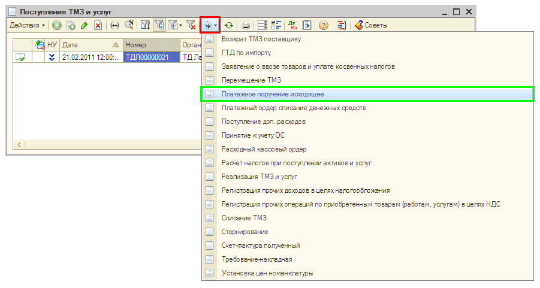
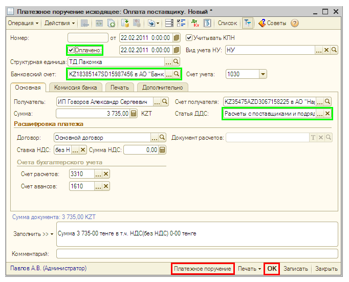
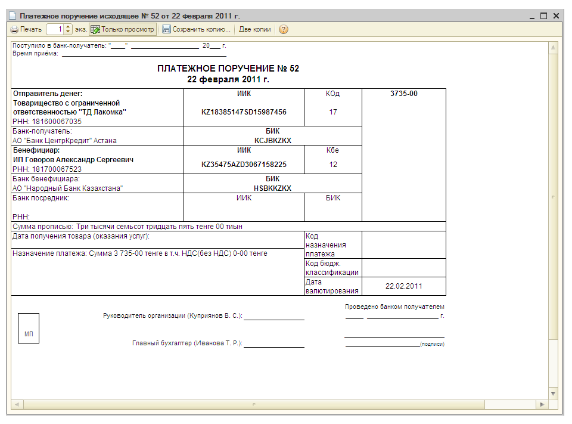

Перечисление денежных средств поставщику с расчетного счета организации: платежное поручение
Списание денежных средств с расчетного счета организации отражается в «1С:Бухгалтерии 8 для Казахстана» документом Платежное поручение исходящее.
- Создайте документ Платежное поручение исходящее на основании документа Поступление товаров и услуг.
Для этого в списке документов Поступление товаров и услуг выделите созданный ранее документ и нажмите на кнопку  (или щелкните правой кнопкой мыши и в открывшемся меню выберите На основании). Выберите в предложенном списке — Платежное поручение исходящее.
(или щелкните правой кнопкой мыши и в открывшемся меню выберите На основании). Выберите в предложенном списке — Платежное поручение исходящее.

- Автоматически будет создан новый документ Платежное поручение исходящее. В документе на основании данных документа Поступление товаров и услуг заполнены все основные реквизиты. Заполните недостающие реквизиты (Банковский счет и Статья движения ден. средств) так, как показано на рисунке:

Печать платежного поручения
Из документа Платежное поручение исходящее выводится форма платежного поручения для печати и передачи его в банк.
- Нажмите кнопку Записать в нижней части формы документа Платежное поручение исходящее.
- Нажмите кнопку Платежное поручение для получения печатной формы платежного поручения.
 - Закройте печатную форму платежного поручения.
- Установите флажок Платежное поручение оплачено в форме документа и дату фактического перечисления банком денежных средств поставщику.
ПРИМЕЧАНИЕ
Если флаг Платежное поручение оплачено установлен, при нажатии на кнопку ОК документ сформирует проводки бухгалтерского учета, если флаг не установлен - документ может быть только записан в информационную базу. |
СОВЕТ
Признак оплаты платежных поручений удобно устанавливать с помощью обработки Выписка банка. Для этого нужно открыть список банковских выписок (меню Банк и касса - Выписка банка), указать организацию, расчетный счет и дату выписки. Далее в форме выписки следует нажать кнопку Заполнить - в табличном поле будет отобран список всех платежных поручений, по заданным условиям, оплата которых не была отражена ранее в информационной базе. В списке документов нужно отметить флажками оплаченные платежные поручения (в соответствии с полученной выпиской банка) и нажать кнопку  . Отмеченным платежным поручениям автоматически будет установлен признак оплаты, документы сформируют бухгалтерские проводки перечисления денежных средств поставщику. . Отмеченным платежным поручениям автоматически будет установлен признак оплаты, документы сформируют бухгалтерские проводки перечисления денежных средств поставщику. |
- Нажмите кнопку ОК в нижней части формы документа Платежное поручение исходящее для проведения документа и закрытия формы.
Только что Вы научились отражать в программе оплату поставщику.
Из следующего раздела Вы узнаете, как провести закрытие месяца.